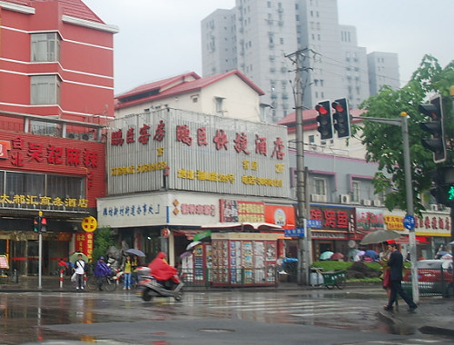

|

The Shanghai French Concession was a foreign concession from 1849 until 1946, and it was progressively expanded in the late 19th and early 20th centuries. The concession came to an end in practice in 1943 when the Vichy French government signed it over to the pro-Japanese puppet government in Nanking . The area covered by the former French Concession was, for much of the 20th century, the premier residential and retail districts of Shanghai,. Despite rampant re-development over the last few decades, the area retains a distinct character, and is a popular tourist destination. |